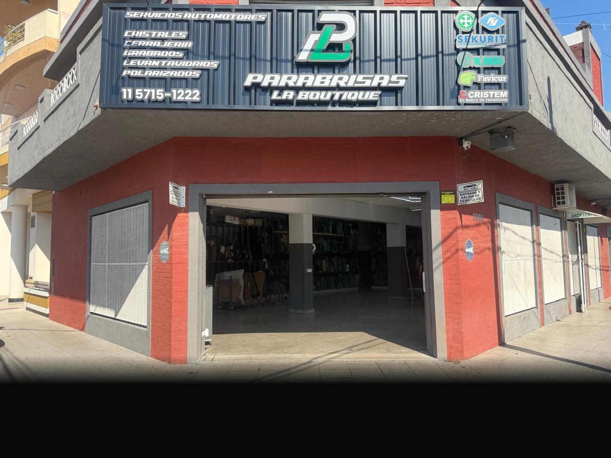

01 · Quiénes somos
Una trayectoria construida en el oficio.
Desde 1997 resolvemos necesidades de cristalería y cerrajería automotor para particulares, empresas y compañías aseguradoras.
Cada vehículo es un compromiso: escuchar, evaluar el trabajo necesario y brindar una solución acorde a cada intervención. Esa forma de trabajar, con atención cercana y una estructura preparada para responder con agilidad, nos permitió sostener relaciones comerciales a lo largo de casi tres décadas.
Nuestro propósito: poner esa experiencia y capacidad de atención al servicio de los asegurados de MAPFRE.
29 años
de trayectoria,
desde 1997
desde 1997
5
personas en el
equipo de trabajo
equipo de trabajo
15
vehículos por día
(capacidad estimada)
(capacidad estimada)
4,7 ★
calificación en Google
173 reseñas
173 reseñas

Cerrito 2399 · Lomas del Mirador